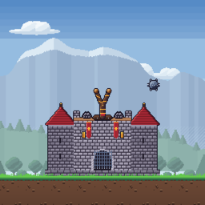

Gizlilik Politikası
Rock & Rampart: Castle Defense · Son güncelleme: 7 Kasım 2026
Bu politika, iOS için yayımlanan Rock & Rampart: Castle Defense oyununun ("Oyun") hangi bilgileri nasıl kullandığını açıklar.
Geliştiricinin topladığı bilgiler
Oyunun geliştiricisi sizden kişisel bilgi toplamaz. Oyunda hesap, kayıt ya da giriş yoktur.
Oyun ilerlemeniz (açılan bölümler, yıldızlar, atölye yükseltmeleri, gösterilen ipuçları) ve ayarlarınız (müzik, efekt, titreşim) yalnızca cihazınızda saklanır; hiçbir sunucuya gönderilmez. Oyunu silerseniz bu bilgiler de silinir.
Reklamlar
Oyun isteğe bağlı ödüllü reklamlar gösterir: bir reklamı izlemeyi seçerseniz oyun içi bir ödül kazanırsınız. Reklamlar Google'ın AdMob hizmetiyle sunulur. AdMob, reklam göstermek, reklamların performansını ölçmek ve kötüye kullanımı önlemek için cihazınızdan şu bilgileri toplayabilir:
- reklam kimliği (IDFA; yalnızca uygulama izleme iznini verirseniz),
- IP adresi ve buna dayalı yaklaşık konum,
- cihaz ve işletim sistemi bilgileri,
- reklamlarla etkileşim (gösterim, tıklama, izlenme).
İzleme iznini vermezseniz reklamlar kişiselleştirilmeden gösterilir. Bu izni istediğiniz zaman iPhone'unuzun Ayarlar > Gizlilik ve Güvenlik > İzleme bölümünden değiştirebilirsiniz. Avrupa Ekonomik Alanı ve Birleşik Krallık'taki oyunculara reklam onayı ayrıca sorulur. Google'ın bu bilgileri nasıl kullandığı için: policies.google.com/technologies/ads
Çocuklar
Oyun 13 yaşın altındaki çocuklara yönelik değildir ve bilerek çocuklardan kişisel bilgi toplanmaz.
Değişiklikler
Bu politika değişirse güncel hâli bu sayfada yayımlanır.
İletişim
Sorularınız için bize yazın.
Privacy Policy (English)
The developer of Rock & Rampart: Castle Defense ("the Game") does not collect any personal information. The Game has no accounts or sign-in. Your progress and settings are stored only on your device and are never sent to a server.
The Game shows optional rewarded ads served by Google AdMob. To show and measure ads and to prevent fraud, AdMob may collect your advertising identifier (IDFA, only if you allow app tracking), IP address and approximate location, device information and ad interactions. If you do not allow tracking, ads are not personalized. You can change this at any time in Settings > Privacy & Security > Tracking. Players in the EEA and UK are asked for ad consent separately. See policies.google.com/technologies/ads for how Google uses this data.
The Game is not directed at children under 13. Updates to this policy will be posted on this page. Contact: send us a message.